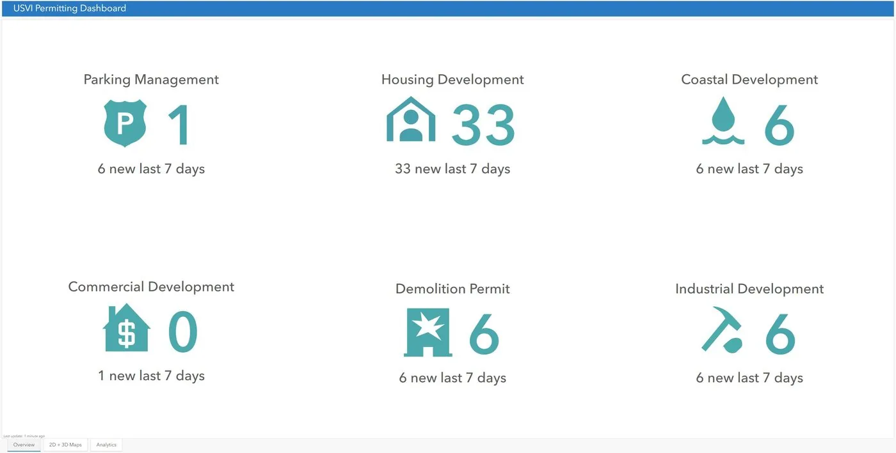
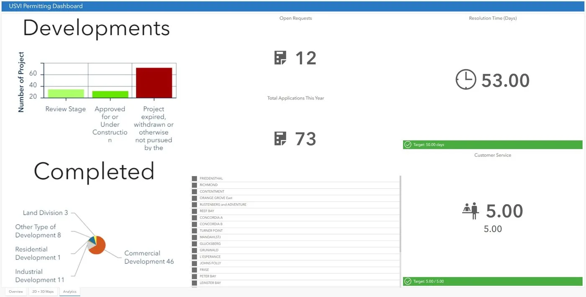
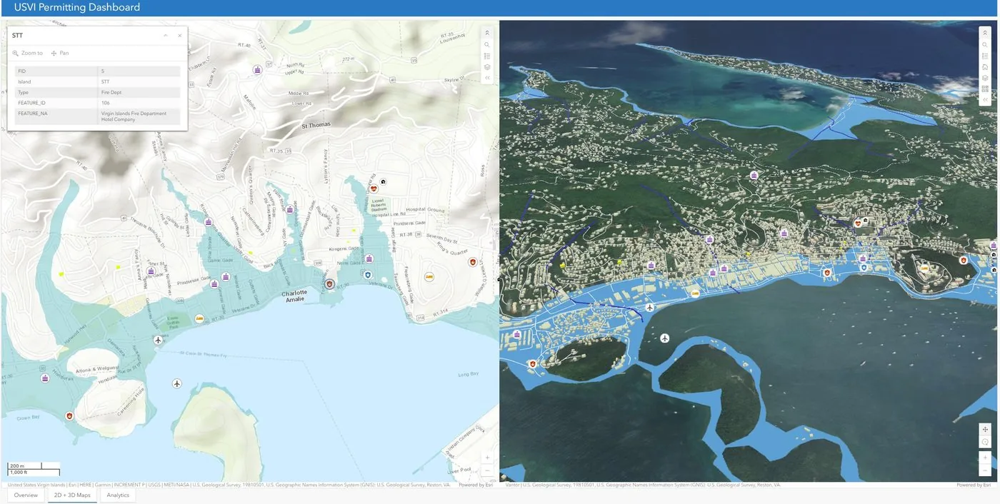
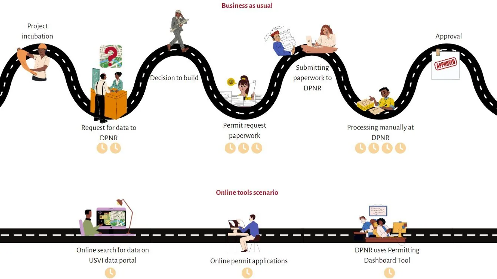
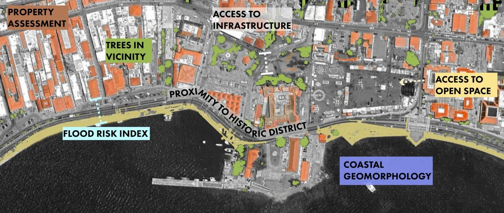

Strategy and Consulting · US Virgin Islands · 2023
Post-hurricane and post-pandemic, DPNR had 600+ datasets scattered across the internet and no unified way to act on them. We designed a data strategy and built three working prototypes.
Key findings
Three live deliverables
Each prototype was built for DPNR's actual capacity: usable, maintainable, and trustworthy after the project ended.



Research questions
Background
Following hurricanes Irma and Maria in 2017 and the COVID-19 pandemic, the US Virgin Islands needed to plan more effectively for climate resilience. DPNR had access to over 600 datasets covering demographics, climate stressors, infrastructure, and permitting, but they were spread across disconnected sources, maintained inconsistently, and largely inaccessible to the agencies and communities who needed them.
We accepted not a technical but an institutional challenge. How do you build data infrastructure that a small island government can actually sustain after a consulting team leaves?


Opportunities
Barriers
Our approach
Reflection
Standard data infrastructure assumptions, including reliable connectivity, standardized formats, and institutional continuity, don't hold in a small island context recovering from back-to-back category 5 hurricanes.
The most important constraint wasn't budget or timeline. It was the question of what DPNR could actually maintain after we left. A powerful system that requires constant outside support is a new dependency, not resilience infrastructure.
Data infrastructure for a climate-stressed island is a governance problem, an equity problem, and a sustainability problem all at once.
What we delivered